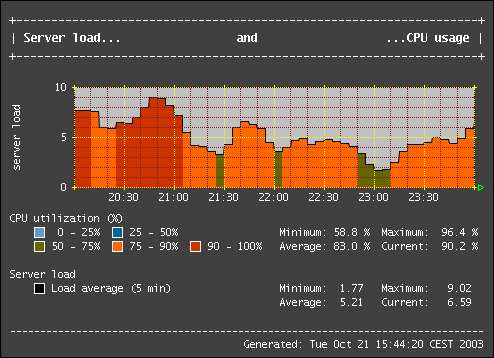
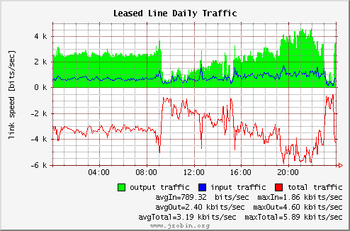
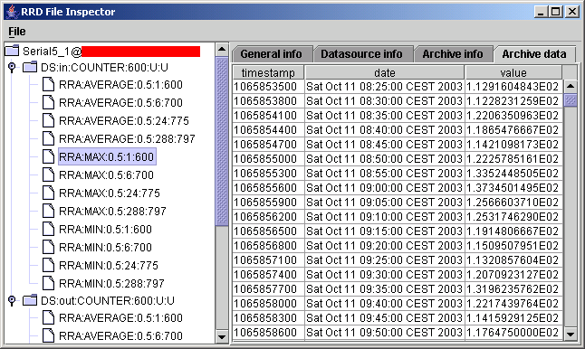

JRobin 1.2.x released
What's new?
JRobin 1.2.0 stands to JRobin 1.1.0 like Windows 95 to Windows 3.11. Now you have an idea how big this upgrade was.
Starting from release 1.2.0, JRobin ships as a standalone library (single jar-file without additional libraries). Arne Vandamme did a great job by rewriting the entire jrobin.graph.* package from the scratch. Finally, he removed the entire JFreeChart as a graphing tool and added many new options, improving the speed of the remaining code at the same time. Today, JRobin stands quite proudly side by side with RRDTool: you'll have a hard time trying to create a RRDTool graph which cannot be reproduced with JRobin. Check out our Gallery page to see some of the possibilities of JRobin. If you know how to use RRDTool, take a look at our quick reference page: switching from RRDTool to JRobin should be an easy task for any Java programmer!
JRobin 1.2.0 has slightly different API compared to 1.1.0 version but many users won't notice this. We had also to change package names - JRobin has its own domain now and it was inevitable to reflect it in the source code. We apologize to developers who will have to recompile their code, but we promise huge benefits from that on the long run.
Graphs produced with JRobin are now almost identical to those produced with RRDTool. Here are some sample graphs created with JRobin 1.2.0:


Small historical note: When I started my work on JRobin, I was too lazy to write the entire jrobin.graph.* package from the beginning. Instead of it, I used JFreeChart library. In almost no time I got some decent graphs from RRD files. But I must admit that I was never happy with that solution: JFreeChart is, by Java standards, a huge library, much bigger than JRobin. I felt some discomfort while making my relatively small library dependent from a bigger one, just for graphing purposes. On the other hand, JFreeChart was not made with RRDTool graphing capabilities in mind: JFreeChart API is not sufficient (and probably will never be) to create the exact look&feel of RRDTool graphs. Well, JFreeChart is now obsolete and I hope that JRobin users who felt the same kind of discomfort are now satisfied.
Other changes and improvements
- New package names (like org.jrobin.*). We apologize to all developers, but this change was inevitable, sooner or later.
- Faster, smaller code. Some complex graphs are now generated ten times faster than before. JRobin now easily handles RRD files greater than 2Mb.
- Improved fetch operation. Filter unwanted datasources from fetch results and get results faster.
- Added RrdDbPool class to hold a pool of open RRD files. Get access to your frequently updated RRD files faster.
- Added optional locks to RRD files. You can obtain exclusive access to a RRD file to be sure that no one else can open or update the same file while you work with it.
- Removed memory-hungry DOM model for XML export. It means that you can export bigger RRD files to XML format than before (tested on RRD files up to 1.5Mb).
- Improved UI of JRobin-MRTG client. Most menu actions are now available through right clicks. Read more about JRobin-MRTG demo application here.
![[Image]](../images/mrtg/mrtg-client.png)
(sensitive information removed)
- Added Inspector application (RRD file viewer). Now you are able to see all the information embedded in your JRobin RRD files quickly and easily. Here is a screenshot:

- Richer API for developers, more public classes, more public methods.
- Improved ANT script with many targets - you can easily rebuild the entire distribution or just a part of it.
- New ComplexDemo to demonstrate advanced graphing capabilities of JRobin.
- Many bugfixes.
- New, entirely redesigned web site.
Copyright © 2003, 2004 Sasa Markovic & Arne Vandamme. All Rights Reserved.